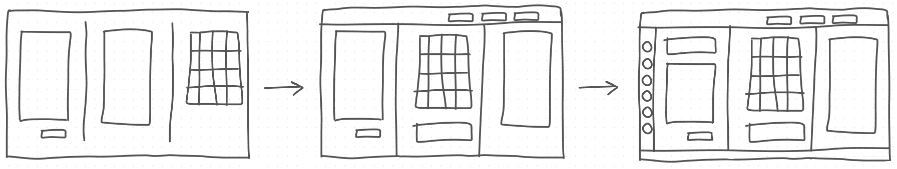

Here is some of my selected work üòÑ
AryaBota: Gradual programming environment to teach programming concepts through level-wise puzzles

Education & EdTech: Provision of inclusive and accessible education to underserved communities

Sketch2HTML: Web application to convert a hand-drawn wireframe into a downloadable HTML webpage

Zero Footprint Viewer: Ubiquitous web application to view/manipulate clinical images

KYC: Front-end application to improve data access and management at GEHC.
Sketch2HTML
Fullstack Development · Image Processing · Front-end DevelopmentDescription
What is Sketch2HTML?
Sketch2HTML is a web application to convert a hand-drawn wireframe into a usable HTML webpage.Who is Sketch2HTML for?
It is for front-end developers to generate basic code, for back-end developers to focus on backend code with a mock front-end, and for students and teachers to create/copy functional websites instantly.

- Jan 2020 – June 2020
- PES University, Bangalore
- Mentor: Prof. Vidhu Rojit
- Team Size: 3
- Requirement Gathering
- Literature Review
- UI Design and Development
- Data Creation
- Project Architecture
- Unit Testing
- Python 3.6
- OpenCV
- HTML5/ES6/CSS3
- Bootstrap
- Flask
- Wireframing
- Selenium Web Driver
- Machine Learning
- Image Processing
Project Details
Motivation
The creative design process for a website begins with ideas describing the site's basic structure. This is most often a mockup, sketch, or wireframe. The same usually stands for academia as well. Someone learning web technologies will often use skeletal web pages or sketches.With Sketch2HTML we aimed to speed up this process through a tool that understands and recognizes specific elements, and translates them to HTML code.
Design Solution
Sketch2HTML's design approach:- Upload the hand-drawn sketch or wireframe to the UI.
- Input image is preprocessed, i.e, all shapes are cropped, and noise is removed from the image.
- Cropped objects are passed to the SVM model to be classified into specific HTML elements.
- This information is converted to HTML code, and elements positioned as drawn.
- Output page is displayed on the UI, ready for immediate download and use.
Project Timeline
Gantt Chart depicting the different phases of the project:Literature Review
However, it was around this time that Microsoft released the beta version of it's Sketch2Code application. This seemed more relevant to our research, and was closer to the approach we were leaning toward.
Based on our research, we decided to create Sketch2HTML (previously simply named, HTML Generator), a tool that allows input in the form of hand-drawn images, or digitized wireframes, and generates the desired HTML page.
Implementation
I created the input data manually, and augmented it with transformed images. We then implemented the tool through these modules: Object Detection, SVM with Sklearn, HTML Factory to classify elements, Flask App, User Interface.Key Features
- Upload hand-drawn images through UI
- Convert these images to HTML
- Preview generated HTML page
- Modify basic styling of elements
- Download source code of previewed page
My Contribution
- Designing and implementing the UI/UX of the application
- Creating and transforming various elements/pages as input data
- Implementing object detection, to identify elements on a page
- Writing unit tests for the UI using Selenium Web Driver
- Creating the roadmap and documentation, and presenting the final application
Testing
I implented unit tests for all UI features, using Selenium Web Driver on Google Chrome.Outcomes and Learnings
- I learnt how to assess the feasibility of a solution, while keeping in mind technical constraints.
- I understood the importance of designing solutions while keeping the user at the forefront.
Documentation and Codebase
You can check out the project report I created at
docs/Sketch2Html_ProjectReport.pdf.
Alternatively, you can take a look at the code repository at
https://github.com/prernarao/Sketch2HTML
Do feel free to reach out to me if you would like to learn more about this project, I'd love to chat with you about it.
Zero-Footprint Viewer
Note: GE Healthcare's intellectual property is strictly confidential and has been highly abstracted here.Healthcare/Clinical Imaging · Fullstack Development · Software Engineering
Description
What is Zero-Footprint Viewer?
The Zero-Footprint Viewer (ZFP) is a ubiquitous, platform-independent web application to view and manipulate clinical images. It enables fast, secure access to patient information across multiple platforms, anywhere there is an internet connection.It provides one platform to view diagnostic images from many modalities, as well as clinical content in PDF, video, and audio formats,
Who is ZFP for?
ZFP can be used by clinicians and the patient care team to review images, surgery plans, and care plans. It allows physicians to access information residing in different systems within a hospital enterprise even when they are siloed and not connected..png)
- Sep 2020 – Present
- Software Engineering Specialist
- GE Healthcare, Digital Solutions
- Front-End Development
- Back-End Feature Development
- Audit Logging
- Legacy Code Migration
- Unit Testing
- Java
- SpringBoot
- JavaScript/ES6, TypeScript
- KnockoutJS, Handlebar.js
- Visual Studio Solutions
- Jasmine/Karma/JUnit Testing
- Kubernetes
- Helm Charts
- Agile Methodologies
Project Details
My Contributions
What I contributed to this product so far:- I improved the usability of existing versions of ZFP, by enhancing UI features used to manipulate the diagnostic images.
- Based on architecture and design discussions, I integrated ZFP with the required identity providers.
- I migrated APIs and features implemented in previous versions of ZFP, from the .NET framework to Java.
- I enhanced text translations, labelling, zooming, image manipulations, and other annotations on the front-end to make them universal, and more intuitive to use.
- I implemented Audit Logging for the product as per IHE requirements, to ensure patient information confidentiality.
- I owned and implemented a new feature to save manipulations and annotations on DICOM images.
- I fixed over 50 bugs, defects, and customer-raised issues.
AryaBota
Research · CS Education · User Experience · Gamified Learning · Fullstack Development
Description
What is AryaBota?
AryaBota is a visual and gamified environment, to teach programming concepts through level-wise puzzles and reduced syntax barriers. This process is made more engaging through the visual component AryaBota – a bot in a grid that follows commands to navigate its way around obstacles.Who is AryaBota for?
AryaBota is aimed towards K-12 students with minimal programming experience.Live Prototype: https://aryabota.vercel.app/
GitHub Repository: https://github.com/ab-apps
.png)
- June 2021 - Present
- Passion Project
- Mentors:
- Team Size: 5
- User Research
- Pedagogy Research
- UI/UX Design & Development
- Backend Development
- Tool Evaluation
- Data Analysis
- ReactJS
- Python + PLY
- Flask
- Figma
- Google Jamboard
- MongoDB
- Wireframing
- User Research
- Journey Mapping
- Usability Testing
Project Details
Team Members:
Prerna Rao, Varsha Venkatasubramanian, Vaani Sundaresh, Supriya R, Afreen A NooraniMotivation
Often, when learning to program, students struggle with learning the many rules of syntax. Writing syntactically correct programs right from the beginning can result in a cognitive load on beginners. Additionally, for students who have minimal to no experience with technology, especially in a country like India where access to computers is a privilege, using an IDE environment to learn programming concepts can seem intimidating.In this regard, it was a great opportunity for us to explore a better solution to improve CS-education for K-12 learners in India. I specifically wanted to create an environment that was mindful of the impact a tool like this could have on students from diverse backgrounds.
My team and I further studied the problem space, and decided on the problem statement we wanted to address.
Problem Statement
To create a visual programming environment that introduces children to problem-solving and programming concepts, while reducing syntax barriers.As a solution, we chose to build AryaBota to introduce programming concepts in a visual and gamified manner, through level-wise puzzles. With simplified commands that progress through gradual syntax transitions, students can develop an understanding of basic programming concepts at their own pace. This can also provide them with foundations of instructional-thinking that are resilient to change, and can be applied to many programming languages.
User and Pedagogy Research
A primary research phase where we dove deeper into existing programming pedagogies, and performed competitive analysis in this problem space. During this phase, we reviewed multiple papers, talks, and tools from which we drew the following conclusions:
- At present, 'Introduction to Programming' is being taught extremely theoretically in most schools in India.
- Students face a cognitive load from having to learn syntax of programming languages.
- Visual and hands-on learning can improve students' interest in studying concepts.

This was followed by a secondary research phase where we identified our target audience (students aged 10-16), and built teacher/student personas for the same. This provided a foundation for us to conduct our UI/UX research and design.
UI and UX Design
UX Design Process

UI Design Process

In the first iteration, we built a working skeleton of the tool that involved minimal features, and was not very intuitive to use. We had three vertical panes consisting – an input area, the transpiled Python code, and our grid with visual output. When we tested this prototype on a couple of users and gathered feedback, we realised our panes were not ordered optimally. The grid's visual output seemed sidelined, while the transpiled Python code seemed to be highlighted. Since our users were programming novices, this format seemed to confuse them further.
Over the next few iterations, with feedback from a diverse audience, I redesigned the interface to address these issues, and make the UI more intuitive. Additionally, I added support to make certain aspects of the UI configurable by the user. This included the ability to change the size of the font, the display colours, and showing/hiding the transpiled Python pane. This was done primarily to make the experience more accessible and comfortable for the user.

In its current stage, our UI consists of 3 main pages –
-
A landing page:
Here, users are requested to register (or sign in, for existing users).
New users are also asked to fill a registration form, through which we collect anonymised data for our research. -
A home page (design to be finalised):
The homepage provides a brief introduction to AryaBota, and links to the documentation/tutorial for additional information.
It also contains a link to the main programming environment. -
AryaBota's programming environment:
This is the main programming environment, where all the learning takes place. It consists of a level map, UI configuration toolbar, input code editor, problem grid, and transpiled Python code.
The toolbar contains multiple options to make the interface more accessible to the user.
Formative Study and Testing
Feedback and Enhancements
We received the following feedback from our interviews and surveys:- The facilitator was comfortable teaching with AryaBota, and would use it again ✅
- Students enjoyed the visual aspect of the tool ✅
- Students understood basics of instructional thinking ✅
- Students were confident with variables, assignment, and arithmetic in programming ✅
- Creating additional problem grids/questions was quick and easy ✅
- There needs to be wider range of puzzles, in order to provide more practice üîÅ
- Include better, more detailed documentation or tutorials to support unguided learning üîÅ
- Only relevant aspects of the transpiled Python code can be highlighted in order to avoid confusion üîÅ
- Support customised syntax transitions based on the students' programming experience üîÅ
Key Features
- Visual output of executed code, via a robot (named AryaBota) in a grid that follows input commands
- Level-wise puzzles targeting different programming concepts in each level
- Learning concepts through gradual syntax progressions in order to reduce cognitive load
- Backward and forward compatibility of level-wise syntax
- Choice to view/hide transpiled Python code
- Configurable problem grids
- Support for input in other languages (Kannada/Kanglish) – disabled in current prototype
Current State
A research paper comprising our initial findings and describing the tool is under submission.
AryaBota, in its current state, can be accessed at
https://aryabota.vercel.app/.
Here is an introductory tutorial for the same:
Alternatively, you can checkout the
YouTube Playlist or
Documentation
for more details!
Do feel free to reach out to me if you would like to learn more about the current status of the tool, I'd love to chat with you about it!
Unified Customer Master: Know-Your-Customer
Note: GE Healthcare's intellectual property is strictly confidential and has been highly abstracted here.Front-End Development · UI/UX · Software Engineering · Data Management
Description
What is UCM: KYC?
Know-Your-Customer (KYC) is a bolt-on front end to GEHC's existing Unified Customer Master (UCM) application, to improve the quality of access and management of the company's customer data.Who is UCM: KYC for?
It is for internal use at GEHC's Digital Technology business, to help employees work with customer data through a user interface.- Jan 2020 – Sep 2020
- Software Engineering Intern
- GE Healthcare, Digital Technology
- Front-End Development
- API Implementation
- User Workflows
- Testing and Validation
- Bug Fixing
- MVP-1 Release
- Knowledge Transfer to New Team
- ReactJS
- Node.js
- Javascript/ES6
- AWS
- Agile Development
- Rally: Project Management
Project Details
My Contributions
What I contributed to this product:- I collaborated with UX designers to design and implement 12 screens in the product.
- I owned and executed the development of user workflows within the application.
- I built 9 reusable UI components that are utilized in multiple screens and workflows.
- I helped integrate the product with third-party APIs.
- I participated in the verification and validation cycle for the product, and fixed various bugs and defects raised by the testing teams.
- I contributed to releasing the first Minimal Viable Product of this tool.
- I conducted 3 knowledge-transfer sessions to new team members.
What I Learnt From This Product
- I learnt more about how to assess the usability of a product, and incorporate feedback to improve the user experience of the product.
- I learnt the process, and rationale that goes behind designing the UI and UX of any product.
- I learnt how to implement software engineering principles, particularly Agile methodologies, when developing a software product.
Installed-Base Repository
Internship · Fullstack Development
Description
A brief intoduction to this project.
- To be added
- To be added
- To be added
Project Details
Tomatoz - Restaurant Management
College · Fullstack Development
Description
A brief intoduction to this project.- OCt 2019 – Dec 2019
- PES University, Bangalore
- Team Size: 5
- Project Planning
- Requirement Gathering
- Design Documentation
- UI Design
- Backend Development
- Firebase
- HTML5
- ES6
Project Details
Non-Profit Work
Education · Educational Technology · Accessibilty · Inclusivity
Description
What do I do?
I work towards improving learning outcomes for learners from underserved communities through accessible solutions, while keeping in mind their physical, socioeconomic, and cognitive needs.Where do I work?
At present, I am on the core team at Project Sitara Foundation, a for-purpose, non-profit education/edTech organisation working with children from underserved communities in Karnataka, India. Prior to this, I was a student volunteer at Desire Society, an organisation responsible for the well-being of children affected with HIV/AIDS.Project Sitara Foundation
STEM Teacher Instruction Kits
Volunteer & Mentor · May 2021 - PresentI currently lead a special engagement where we focus on improving the quality of STEM education for students with visual impairments. Quite often, students with visual impairments in the state are discouraged from pursuing STEM subjects beyond secondary school. A major reason behind this lopsided fact is that textbooks for the visually impaired were visual in nature! Additionally, their teachers did not have the resources or bandwidth to create a customized curriculum adapted to the needs of the children, or were visually impaired themselves. To combat this, we are working closely with Vision Empower Trust to create Teacher-Instruction-Kits (TIKs) or manuals that assist teachers in delivering complex visual concepts using accessible materials and methods. Vision Empower (VE) Trust is a not-for-profit organisation that empowers children with visual impairments, through inclusive education.
Measuring Impact on 21st Century Skills
Curriculum Research Mentor
Seeing the success and impact of the Math series, we are launching a Science series as well! For this, I mentored a team of volunteers in an effort to research and create a curriculum to be delivered via YouTube and WhatsApp.
You can visit Project Sitara's YouTube page here.
Mathematics and English Tutoring
Desire Society
Do feel free to reach out to me if you would like to contribute to or learn more about the work we do at Project Sitara Foundation, I'd love to chat with you about it!